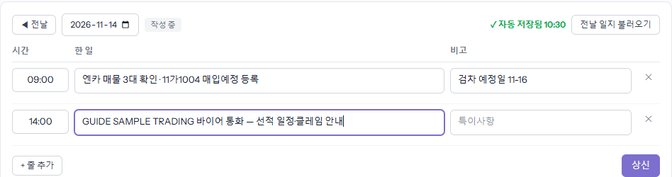
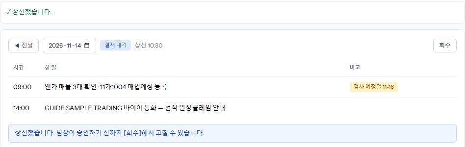
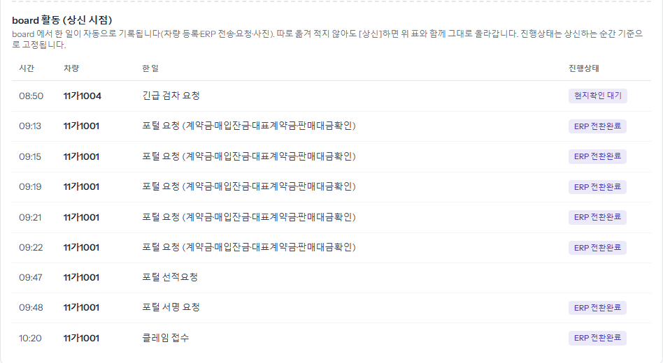
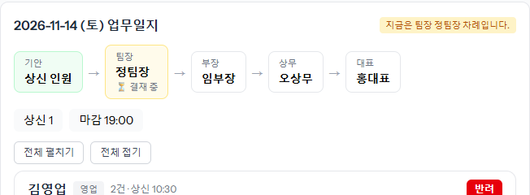
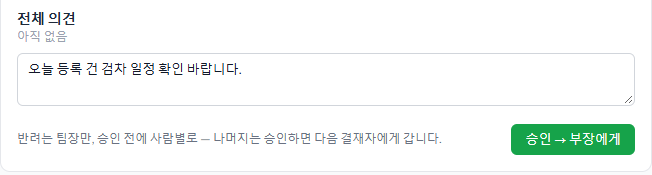
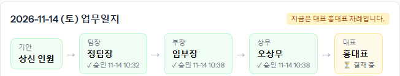
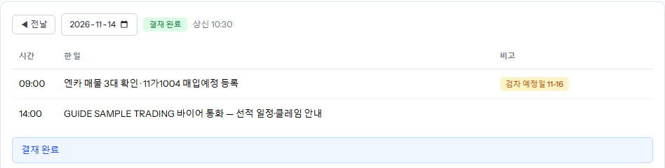
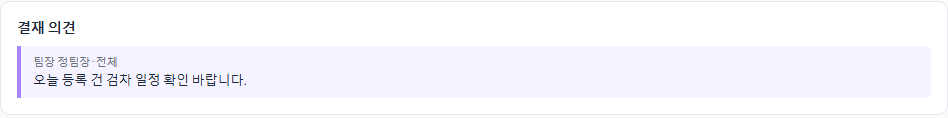

그날 한 일을 적어 상신하면 팀장 → 부장 → 상무 → 대표 순서로 결재됩니다. 왼쪽 메뉴 「업무일지」에서 씁니다. board 에서 한 일(차량 등록·ERP 요청·사진 등)은 아래 「board 활동」에 저절로 기록되니, 따로 옮겨 적지 않아도 됩니다.
[+ 줄 추가]를 누르면 지금 시각이 들어간 줄이 생깁니다. 시간은 칸에서 고칠 수 있습니다. 「한 일」과 「비고」를 적으면 바로 자동 저장됩니다(「자동 저장됨」 표시). 어제와 비슷하면 [전날 일지 불러오기]로 시작합니다. 줄을 지우려면 오른쪽 ✕.

확인 창 뒤 「결재 대기」로 바뀌고 더는 고칠 수 없습니다. 팀장이 승인하기 전까지는 [회수]해서 고친 뒤 다시 상신할 수 있습니다. 마감(보통 19:00)이 지나도 상신은 되고, 그날 기안에 들어갑니다.

그날 board 에서 한 일이 시간·차량·한 일·진행상태로 자동으로 정리됩니다. 진행상태는 상신하는 순간 기준으로 고정됩니다.

그날 상신된 일지가 한 기안으로 묶여 「결재할 것」에 들어옵니다. 위쪽 줄에 결재 순서와 지금 누구 차례인지가 보입니다. [전체 펼치기]로 사람별 일지와 board 활동을 봅니다.

사람별 의견 칸과 「전체 의견」 칸에 적을 수 있습니다(선택). 승인하면 다음 결재자에게 넘어가고, 마지막 결재자는 [승인 → 최종 승인]입니다. 반려는 팀장만, 팀장 승인 전에 사람별로 할 수 있습니다(빨간 [반려] → 사유).


최종 승인되면 「결재 완료」로 바뀌고, 결재자가 남긴 의견이 아래 「결재 의견」에 보입니다. 반려되면 「반려됨」과 사유가 뜨고, 내용은 그대로 있으니 사유에 맞게 고쳐서 다시 [상신]합니다.

